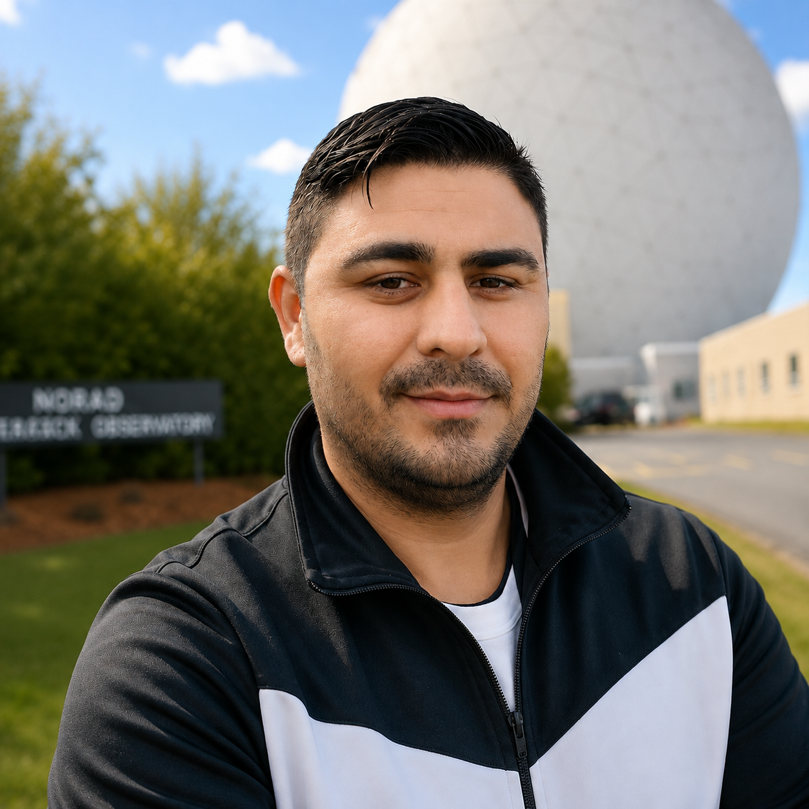
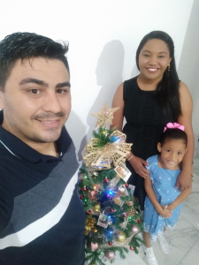

Quem sou eu
Sobre mim

Meu nome é Renato Abreu, sou técnico em Eletrotécnica desde 2011 e formado em Engenharia Elétrica desde 2022.
Trabalho no Rádio Observatório Espacial do Nordeste desde 2012. Sou técnico de manutenção.
Responsável pela manutenção e operação do Observatório trabalhando com diversos sistemas, desde softwares até engrenagens pesadas.
Como falar comigo?
- YouTube - Acesse meu canal do YouTube
- Instagram - Me siga no Instagram
- LinkedIn - Me adicione no LinkedIn
- Twitter - Me siga no Twitter
- Facebook - Me adicione no Facebook
E-mail: renatoaopedaletra@gmail.com
Família
Conheça minha família

Sou casado com Vanesca Rodrigues desde 2007. Casamos no dia 13 de Outubro.
Temos uma linda filha, Maria Eduarda, que todos chamam de Duda. Ela nasceu em 2013 prematura, com 6 meses de gestação. Ficou 3 meses na UTI neonatal e veio pra casa em março de 2014. Ela nasceu no dia 20 de Dezembro de 2013.